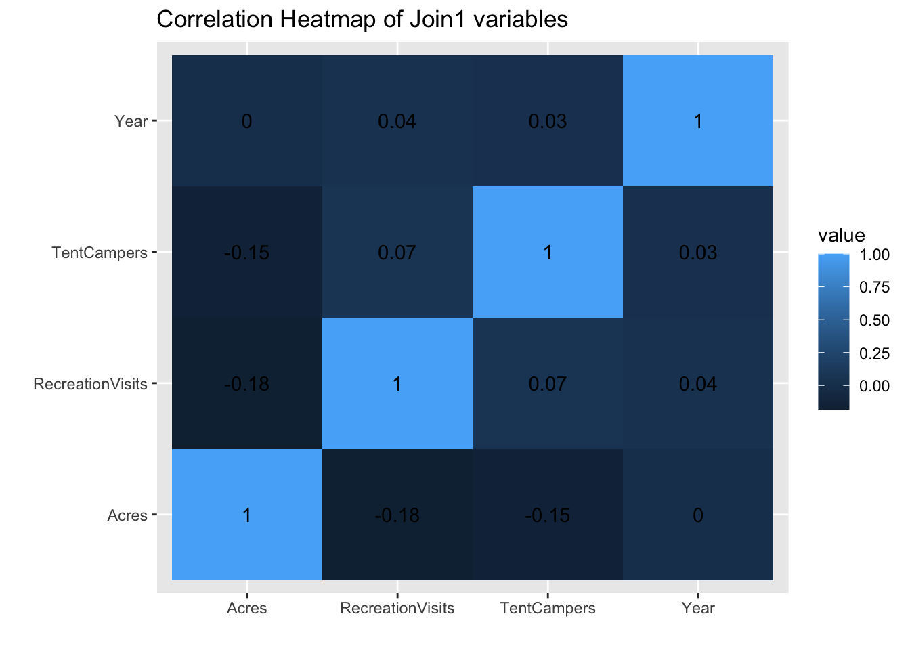
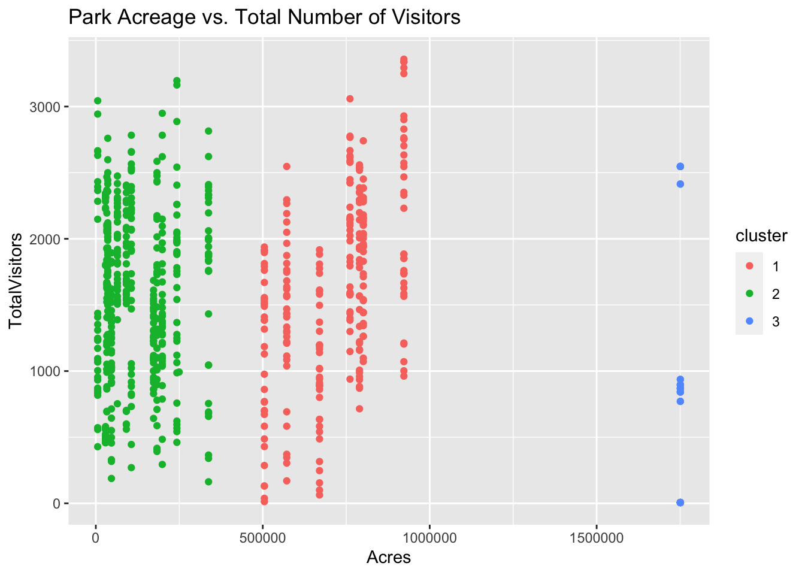
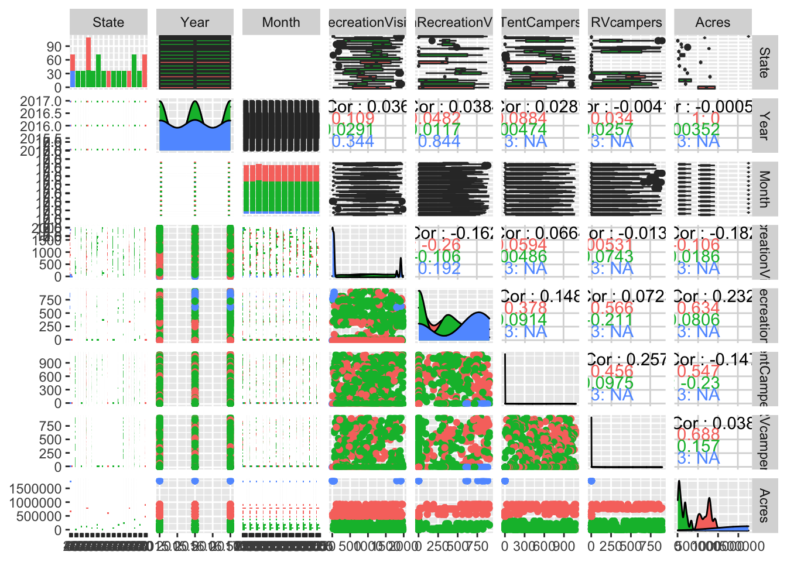

The two datasets I have chosen for this project are both about the U.S. National Parks. One of them (named ‘parks’ in this project) I retrieved from Kaggle.com. It lists the names and codes of all the state parks (Park.Name and Park.Code respectively), the state each park is in (State), the acreage of each park (Acres), and the lattitude/longitude of each park. The other dataset I chose (natparks) came from the U.S. National Parks database and it was a report that I was able to generate and pick/choose what I wanted to work with. This dataset also has the names of each of the parks and the codes (Park.Name, UnitCode) and the state and region each park is located in (State, Region). The natparks dataset also includes data on each of the months (Month) for three years (Year - looks at 2015, 2016, & 2017) for the number of visitors (Recreation Visits & NonRecreation Visits) and the number of campers (TentCampers, RvCampers).
I chose to do my project on these datasets because I have loved the National Parks since I was little and I grew up near White Sands (before it was a national park), Big Bend, and Carlsbad Caverns. I have been dreaming about doing a roadtrip post-grad and seeing how as many parks as I could & possibly camping in them. This project is interesting to me (and helpful) because I will be able to examine which parks are popular during which months of the year. I imagine I will find a correlation of higher visitation rates during the summer months.
#Data loading and Prep
library(readr)
library(dplyr)
#install.packages("ggplot2")
library(ggplot2)
parks<-read.csv("parks.csv")
natparks <- read.csv("natparksdata.csv")
library(tidyverse)
library(tidyr)
glimpse(natparks)## Observations: 2,053
## Variables: 11
## $ Park.Name <fct> Acadia National Park , Acadia National Park , Aca…
## $ UnitCode <fct> ACAD, ACAD, ACAD, ACAD, ACAD, ACAD, ACAD, ACAD, A…
## $ ParkType <fct> National Park, National Park, National Park, Nati…
## $ Region <fct> Northeast , Northeast , Northeast , Northeast , N…
## $ State <fct> ME, ME, ME, ME, ME, ME, ME, ME, ME, ME, ME, ME, M…
## $ Year <int> 2015, 2015, 2015, 2015, 2015, 2015, 2015, 2015, 2…
## $ Month <int> 1, 2, 3, 4, 5, 6, 7, 8, 9, 10, 11, 12, 1, 2, 3, 4…
## $ RecreationVisits <fct> "12,578", "10,626", "18,062", "63,214", "187,205"…
## $ NonRecreationVisits <fct> "600", "600", "600", "600", "7,500", "7,500", "7,…
## $ TentCampers <fct> "0", "0", "0", "0", "10,248", "20,187", "36,642",…
## $ X <fct> "0", "0", "0", "0", "1,737", "4,776", "7,992", "7…glimpse(parks)## Observations: 56
## Variables: 6
## $ Park.Code <fct> ACAD, ARCH, BADL, BIBE, BISC, BLCA, BRCA, CANY, CARE, CAVE,…
## $ Park.Name <fct> Acadia National Park, Arches National Park, Badlands Nation…
## $ State <fct> "ME", "UT", "SD", "TX", "FL", "CO", "UT", "UT", "UT", "NM",…
## $ Acres <int> 47390, 76519, 242756, 801163, 172924, 32950, 35835, 337598,…
## $ Latitude <dbl> 44.35, 38.68, 43.75, 29.25, 25.65, 38.57, 37.57, 38.20, 38.…
## $ Longitude <dbl> -68.21, -109.57, -102.50, -103.25, -80.08, -107.72, -112.18…#Joining/merging
natparks <- natparks %>% rename("RVcampers" = "X") %>% rename("Park.Code"= "UnitCode")
natparks <- natparks %>% mutate(Month = recode(Month, "Jan", "Feb", "Mar", "Apr", "May", "Jun", "Jul", "Aug", "Sep", "Oct", "Nov", "Dec"))
join1 <- natparks%>% inner_join(parks)
join1 %>% summarize(n_distinct(.))## n_distinct(.)
## 1 7572053- 757## [1] 129656-22## [1] 34Since both of my datasets included the full names of the National Parks, I decided to do an inner_join to merge the two data sets by only the parks they had in common. The natparks dataset contained some other parks/monuments that weren’t in the original parks dataset. The natparks dataset lost 1296 rows of observations and the parks dataset lost 34 rows. I believe this happened because there were some slight differences in the way the names of the National Parks had been written in (maybe spacing or wording) and also there were some that just did not match up. I attempted a left_join of parks by natparks but that gave me messier data, and the same thing happened on a full join. The loss of so many rows causes some trouble because I won’t be able to look at all parks across the US or even all of the ones in each state.
#Cleaning!
join1$Acres <- as.numeric(join1$Acres)
join1$RecreationVisits <- as.numeric(join1$RecreationVisits)
join1$NonRecreationVisits <- as.numeric(join1$NonRecreationVisits)
join1$RVcampers <- as.numeric(join1$RVcampers)
join1$TentCampers <- as.numeric(join1$TentCampers)
join1$Year <- as.numeric(join1$Year)
join1$Month <- as.factor(join1$Month)#Wrangling Section! Yee Haw!
glimpse(join1)## Observations: 757
## Variables: 14
## $ Park.Name <chr> "Badlands National Park", "Badlands National Park…
## $ Park.Code <chr> "BADL", "BADL", "BADL", "BADL", "BADL", "BADL", "…
## $ ParkType <fct> National Park, National Park, National Park, Nati…
## $ Region <fct> Midwest , Midwest , Midwest , Midwest , Midwest ,…
## $ State <chr> "SD", "SD", "SD", "SD", "SD", "SD", "SD", "SD", "…
## $ Year <dbl> 2015, 2015, 2015, 2015, 2015, 2015, 2015, 2015, 2…
## $ Month <fct> Jan, Feb, Mar, Apr, May, Jun, Jul, Aug, Sep, Oct,…
## $ RecreationVisits <dbl> 68, 89, 755, 900, 1623, 649, 849, 815, 228, 1082,…
## $ NonRecreationVisits <dbl> 384, 90, 363, 493, 743, 842, 93, 102, 800, 661, 5…
## $ TentCampers <dbl> 2, 166, 2, 600, 633, 988, 67, 50, 782, 316, 1013,…
## $ RVcampers <dbl> 170, 808, 2, 616, 830, 412, 599, 309, 220, 799, 6…
## $ Acres <dbl> 242756, 242756, 242756, 242756, 242756, 242756, 2…
## $ Latitude <dbl> 43.75, 43.75, 43.75, 43.75, 43.75, 43.75, 43.75, …
## $ Longitude <dbl> -102.5, -102.5, -102.5, -102.5, -102.5, -102.5, -…join1 %>% summarize_if(is.numeric, mean, na.rm=T)## Year RecreationVisits NonRecreationVisits TentCampers RVcampers Acres
## 1 2016.001 1007.221 309.6235 409.0317 230.004 396013.5
## Latitude Longitude
## 1 39.18791 -112.4963join1 %>% summarize_if(is.character, n_distinct)## Park.Name Park.Code State
## 1 22 22 15join1 %>% filter(Month == "Jul") %>% summarize(mean(RecreationVisits))## mean(RecreationVisits)
## 1 1024.857join1 <- as.data.frame(join1)
join1 %>% group_by(State, Region) %>% arrange(desc(Acres))## # A tibble: 757 x 14
## # Groups: State, Region [15]
## Park.Name Park.Code ParkType Region State Year Month RecreationVisits
## <chr> <chr> <fct> <fct> <chr> <dbl> <fct> <dbl>
## 1 Kobuk Va… KOVA Nationa… Alaska AK 2015 Jan 2
## 2 Kobuk Va… KOVA Nationa… Alaska AK 2015 Feb 2
## 3 Kobuk Va… KOVA Nationa… Alaska AK 2015 Mar 2
## 4 Kobuk Va… KOVA Nationa… Alaska AK 2015 Apr 2
## 5 Kobuk Va… KOVA Nationa… Alaska AK 2015 May 2
## 6 Kobuk Va… KOVA Nationa… Alaska AK 2015 Jun 2
## 7 Kobuk Va… KOVA Nationa… Alaska AK 2015 Jul 2
## 8 Kobuk Va… KOVA Nationa… Alaska AK 2015 Aug 2
## 9 Kobuk Va… KOVA Nationa… Alaska AK 2015 Sep 2
## 10 Kobuk Va… KOVA Nationa… Alaska AK 2015 Oct 2
## # … with 747 more rows, and 6 more variables: NonRecreationVisits <dbl>,
## # TentCampers <dbl>, RVcampers <dbl>, Acres <dbl>, Latitude <dbl>,
## # Longitude <dbl>join1 %>% na.omit() %>% summarize(mean_visit = mean(RecreationVisits), sd_visit = sd(RecreationVisits), quantile_visit = quantile(RecreationVisits, .90), min_visit= min(RecreationVisits), max_visit= max(RecreationVisits), cor_visit= cor(Year, RecreationVisits))## mean_visit sd_visit quantile_visit min_visit max_visit cor_visit
## 1 1007.221 594.3792 1810.4 2 1983 0.03599058join1%>% group_by(Park.Name, State) %>% summarize(mean_visit = mean(RecreationVisits), sd_visit = sd(RecreationVisits), quantile_visit = quantile(RecreationVisits, .90), min_visit= min(RecreationVisits), max_visit= max(RecreationVisits), cor_visit= cor(Year, RecreationVisits), var_visit = var(RecreationVisits)) %>% na.omit ## # A tibble: 21 x 9
## # Groups: Park.Name [21]
## Park.Name State mean_visit sd_visit quantile_visit min_visit max_visit
## <chr> <chr> <dbl> <dbl> <dbl> <dbl> <dbl>
## 1 Badlands… SD 756. 527. 1695 67 1909
## 2 Big Bend… TX 991. 339. 1324 486 1726
## 3 Biscayne… FL 1211. 255. 1533 638 1681
## 4 Black Ca… CO 1147. 370. 1606 174 1912
## 5 Bryce Ca… UT 1051. 384. 1604. 281 1935
## 6 Canyonla… UT 1291. 655. 1898 65 1964
## 7 Carlsbad… NM 1095. 437. 1594. 184 1890
## 8 Crater L… OR 923. 645. 1842 33 1968
## 9 Dry Tort… FL 1368. 354. 1660. 26 1802
## 10 Haleakal… HI 763. 848. 1964. 97 1982
## # … with 11 more rows, and 2 more variables: cor_visit <dbl>, var_visit <dbl>#More Wrangling!
join1 <-join1 %>% mutate(TotalVisitors = RecreationVisits + NonRecreationVisits + RVcampers)
join1 <-join1 %>% mutate(TotalCamp = TentCampers + RVcampers) %>% arrange(desc(TotalCamp))
head(join1)## Park.Name Park.Code ParkType Region State
## 1 Yosemite National Park YOSE National Park Pacific West CA
## 2 Hot Springs National Park HOSP National Park Midwest AR
## 3 Bryce Canyon National Park BRCA National Park Intermountain UT
## 4 Lassen Volcanic National Park LAVO National Park Pacific West CA
## 5 Canyonlands National Park CANY National Park Intermountain UT
## 6 Olympic National Park OLYM National Park Pacific West WA
## Year Month RecreationVisits NonRecreationVisits TentCampers RVcampers Acres
## 1 2017 Mar 526 749 1007 870 761266
## 2 2016 Jan 1698 396 982 849 5550
## 3 2016 Nov 1621 254 908 885 35835
## 4 2016 Mar 1801 2 931 852 106372
## 5 2016 Nov 959 2 975 800 337598
## 6 2015 May 936 703 1059 713 922651
## Latitude Longitude TotalVisitors TotalCamp
## 1 37.83 -119.50 2145 1877
## 2 34.51 -93.05 2943 1831
## 3 37.57 -112.18 2760 1793
## 4 40.49 -121.51 2655 1783
## 5 38.20 -109.93 1761 1775
## 6 47.97 -123.50 2352 1772All six of the dyplr functions required for this project were used on my data to assist in the exploration of the dataset, “join1” and in the calculation of summary statistics. For my summary statistics, I calculated the mean, max, min, sd, quantile, cor, and var for the variable RecreationVisits, which presents the number of people that visited each park in each month for that year. Then I grouped my data by state and by park in order to examine these numbers by each park. Kobuk Valley National Park had the lowest overall mean of Recreation visits, which makes sense, since its all the way in Alaska. Dry Tortugas National Park had the highest average overall Recreation visitors, which also makes sense as it is on the coast in Florida. The National Park with the largest acreage is the Kobuk Valley National Park in Alaska, which is understandable, as its in the Largest state in the US, but it is interesting that the park with the largest acreage has the smallest average Recreation visits overall. Yosemite had the highest total number of campers overall in the month of March in 2016.
#Visualizing!
#install.packages("reshape2")
library(reshape2)
parkcor <- join1 %>% na.omit %>% select_if(is.numeric)
cor(parkcor)## Year RecreationVisits NonRecreationVisits
## Year 1.0000000000 0.03599058 0.03843376
## RecreationVisits 0.0359905809 1.00000000 -0.16181014
## NonRecreationVisits 0.0384337551 -0.16181014 1.00000000
## TentCampers 0.0289168770 0.06642688 0.14849677
## RVcampers -0.0041295102 -0.01328450 0.07225435
## Acres -0.0005571006 -0.18220373 0.23230297
## Latitude -0.0007667792 -0.12564282 -0.01424162
## Longitude -0.0005074810 0.15786348 -0.05401472
## TotalVisitors 0.0456428860 0.78156927 0.32316876
## TotalCamp 0.0179953679 0.03923027 0.14428245
## TentCampers RVcampers Acres Latitude
## Year 0.02891688 -0.00412951 -0.0005571006 -0.0007667792
## RecreationVisits 0.06642688 -0.01328450 -0.1822037347 -0.1256428193
## NonRecreationVisits 0.14849677 0.07225435 0.2323029673 -0.0142416174
## TentCampers 1.00000000 0.25652667 -0.1472299481 -0.3707950545
## RVcampers 0.25652667 1.00000000 0.0379769804 -0.0717759239
## Acres -0.14722995 0.03797698 1.0000000000 0.6639452114
## Latitude -0.37079505 -0.07177592 0.6639452114 1.0000000000
## Longitude 0.09750354 0.11920013 -0.4757242796 -0.4699876672
## TotalVisitors 0.23051111 0.44695015 -0.0398056899 -0.1444733843
## TotalCamp 0.84394445 0.73497435 -0.0822150136 -0.2999750605
## Longitude TotalVisitors TotalCamp
## Year -0.000507481 0.04564289 0.01799537
## RecreationVisits 0.157863477 0.78156927 0.03923027
## NonRecreationVisits -0.054014723 0.32316876 0.14428245
## TentCampers 0.097503545 0.23051111 0.84394445
## RVcampers 0.119200126 0.44695015 0.73497435
## Acres -0.475724280 -0.03980569 -0.08221501
## Latitude -0.469987667 -0.14447338 -0.29997506
## Longitude 1.000000000 0.16292879 0.13456208
## TotalVisitors 0.162928788 1.00000000 0.40977850
## TotalCamp 0.134562081 0.40977850 1.00000000campingcor <- select(join1, Acres, Year, RecreationVisits, TentCampers) %>% cor(.) %>% as.data.frame
campingcor %>% rownames_to_column %>% pivot_longer(-1) %>% ggplot(aes(rowname, name, fill= value)) +geom_tile() + geom_text(aes(label = round(value, 2))) + xlab('') + ylab ('') + ggtitle("Correlation Heatmap of Join1 variables")
The first section of my data visualization features a correlation heatmap of my dataset, “join1”, which resulted from the joining of the natparks dataset and the parks dataset. This heatmap shows that there is very little correlation between the numeric variables that I chose to examine, which were the Acreage of each park, the number of Recreation visitors to each park (per month, per year), Tent campers in each park (per month, per year) and the year. The largest correlation visible is between Tent Campers and Recreation Visitors at 0.07. There is a small correlation (0.04) between Year and number of Recreation Visitors, and a slightly smaller correlation (0.03) between year and Tent campers.
#More Visualizing!
ggplot(join1, aes(x=Month, fill = Month)) + geom_bar(aes(y= TentCampers), stat= "summary", fun.y = "mean") + ggtitle("Average Number of Tent Campers per Month") + ylab("Number of Tent Campers")I wanted to create/look at this plot in order to determine which of the 12 were the busiest months for camping the National Parks on average. I had an idea already that the summer months (May, June and July) would have larger numbers than the winter months (December, January and February). This hypothesis (common knowledge?) was demonstrated as being true from the plot generated on data from the years 2015-2017. I assumed this would be the case due to the temperatures/weather that occur during the winter months.
ggplot(join1, aes(x= Park.Code, fill= Park.Code)) + geom_bar(aes(y= RecreationVisits), stat= "summary", fun.y = "mean") + ggtitle("Average Number of Visitors per Park (2015-2017)") + theme(legend.position = "none") + xlab("National Park (code name)") + theme(axis.text.x= element_text(angle = 90))This was another point of interest for me. I was very curious as to which parks were the most popular to visit. I sadly am missing a lot of the more popular (“well-known”) parks in my data set due to the loss during the join, like the Grand Canyon, Great Smoky Mountains, Yellowstone, etc. But of these, it was interesting to see that the Dry Tortugas National Park was the most frequently visited on average over the years 2015-2017.
#Dimensionality Reduction!
library(cluster)
#install.packages("plotly")
library(plotly)
#install.packages("GGally")
library(GGally)
pam2 <- join1 %>% select(-State, - Latitude, -Longitude, -Region, -ParkType, -Park.Code, -Month, -Park.Name) %>% pam(3)
sil_width <- vector()
for(i in 2:10){
pam_fit <- join1 %>% select(-State, - Latitude, -Longitude, -Region, -ParkType, -Park.Code, -Month, -Park.Name) %>% pam(i)
sil_width[i] <-pam_fit$silinfo$avg.width
}
ggplot() + geom_line(aes(x=1:10, y= sil_width)) + scale_x_continuous(name = "k", breaks = 1:10)pamfinal <- join1 %>% mutate(cluster = as.factor(pam2$clustering))
parkdata <-pamfinal %>% group_by(State, Region, ParkType, Park.Code, Month, Park.Name) %>% count(cluster) %>% arrange(desc(n)) %>% pivot_wider(names_from = "cluster", values_from = "n", values_fill = list('n' = 0))
parkdata## # A tibble: 253 x 9
## # Groups: State, Region, ParkType, Park.Code, Month, Park.Name [2,604]
## State Region ParkType Park.Code Month Park.Name `1` `3` `2`
## <chr> <fct> <fct> <chr> <fct> <chr> <int> <int> <int>
## 1 AK Alaska National P… KEFJ Apr Kenai Fjords Nati… 3 0 0
## 2 AK Alaska National P… KEFJ Aug Kenai Fjords Nati… 3 0 0
## 3 AK Alaska National P… KEFJ Dec Kenai Fjords Nati… 3 0 0
## 4 AK Alaska National P… KEFJ Feb Kenai Fjords Nati… 3 0 0
## 5 AK Alaska National P… KEFJ Jan Kenai Fjords Nati… 3 0 0
## 6 AK Alaska National P… KEFJ Jul Kenai Fjords Nati… 3 0 0
## 7 AK Alaska National P… KEFJ Jun Kenai Fjords Nati… 3 0 0
## 8 AK Alaska National P… KEFJ Mar Kenai Fjords Nati… 3 0 0
## 9 AK Alaska National P… KEFJ May Kenai Fjords Nati… 3 0 0
## 10 AK Alaska National P… KEFJ Nov Kenai Fjords Nati… 3 0 0
## # … with 243 more rowsggplot(pamfinal, aes(x=Acres, y= TotalVisitors, color = cluster)) + geom_point() + ggtitle("Park Acreage vs. Total Number of Visitors")
plot(pam2, which = 2)ggpairs(pamfinal, columns = 5:12, aes(color=cluster))
The average silhouette width for the data I worked with was .79 when examined under the plot of pam(x=., k=3). The value of .79 indicates that a strong structure has been found, which does not seem to line up to my other results. Also, none of the graph showed up on the silhouette plot, which I’m unsure if that was because of my version of R on my computer or a complication with my code. (#Ran out of time to figure this out this morning#). I chose to go with 3 because that is where my plot began to descend. There did not appear to be any strong correlations with any of my numeric variables. There was a small correlation between Recreation Visitors and Tent Campers, which would make sense, if a park has more overall visitors there would probably be more campers coming to the park as well. This is most likely the case during the summer season when the weather is good.